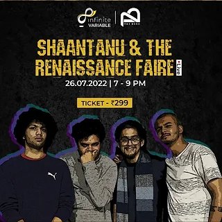

Explore the record
Explore the record Pills
Joash Mathew
Bass · Production · Recording · Mixing

From the first bass line
to the final mix.
In the studio.
On the stage.
Joel’s work moves between playing bass, producing records, and engineering live sound. From independent releases in India to sessions in Brooklyn, the music comes first.
The person behind the soundExplore the record Joash Mathew
Bass · Production · Recording · Mixing
Roohani
Bass · Recording · Pre-mix engineering
Live sessions, front-of-house mixes, and the work behind a show.
Explore live work
A record, a live set, or an idea. Let’s talk.